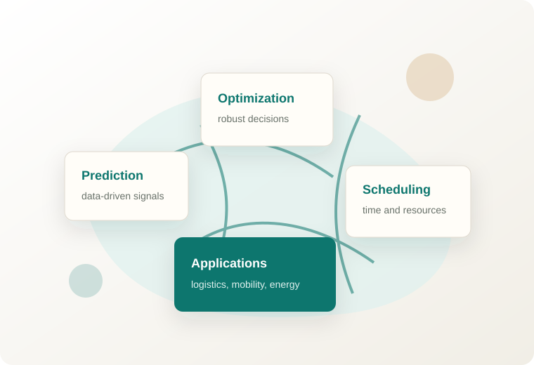

Academic Homepage
Mingze Li (鏉庢槑娉?
Researcher in AI, optimization, and intelligent systems.
I study data-driven decision-making methods for complex industrial and mobility systems, with a focus on reliable learning, scheduling, and optimization.


About
Short Bio
Replace this biography with your own academic introduction. Keep it concise: current role, institution, research interests, and the kinds of problems you solve.
Research
Research Interests
A concise map of the questions, methods, and application areas that define your work.
Selected Work
Publications
Keep the full list in reverse chronological order and highlight your most representative papers.
Projects
Code, Data, and Cases
Use this area for reproducible instances, datasets, demos, code repositories, or industrial cases.
Service
Academic Service and Activities
Contact
Let us connect
Add your institutional email, office address, and academic profiles here. This section is intentionally simple so visitors can find you quickly.